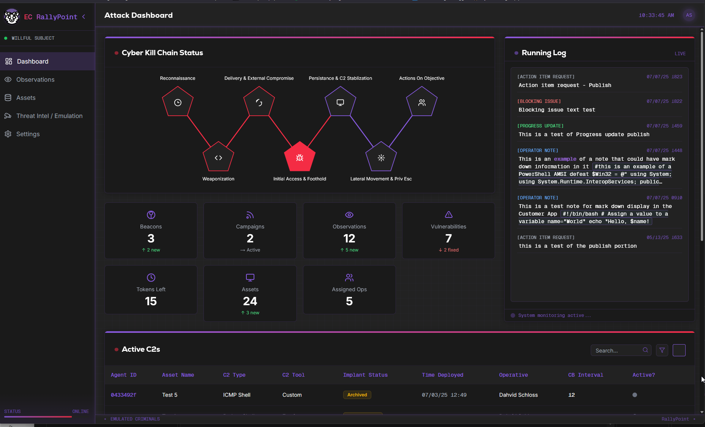

01 / PLATFORM ENGINEERING
EC RallyPoint.
A three-part purple teaming platform that brings operators, engagement data, and client visibility into one system.
I designed the architecture and wrote nearly all of the platform, connecting campaign operations, asset tracking, observations, and threat intelligence.
Explore the interface
